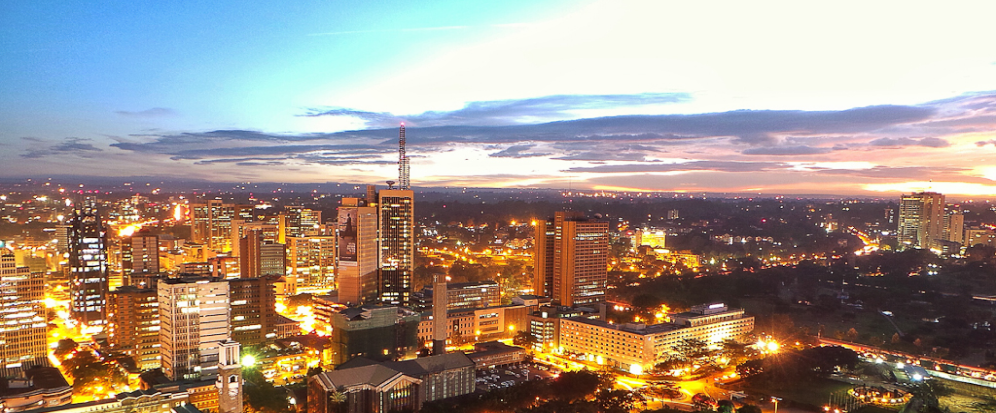

Nairobi
Country
Kenya
Climate
Subtropical Highland
Population
4.4 million
Welcome to
Nairobi!
Nairobi is the capital and the largest city in Kenya. The name comes from the Maasai phrase Enkare Nairobi, which translates to "cool water", a reference to the Nairobi River which flows through the city. The city is popularly referred to as the Green City in the Sun. East Africa's most cosmopolitan city, Nairobi is Kenya's beating heart, an exciting, maddening concrete jungle that jarringly counterpoints the untrammelled natural beauty to be found elsewhere in the country.
Nairobi was founded in 1899 by the colonial authorities in British East Africa, as a rail depot on the Uganda Railway. The town quickly grew to replace Mombasa as the capital of Kenya in 1907. After independence in 1963, Nairobi became the capital of the Republic of Kenya. During Kenya's colonial period, the city became a centre for the colony's coffee, tea and sisal industry.The city lies in the south central part of Kenya, at an elevation of 1,795 metres (5,889 ft).
Experience the
Culture
Kenya National Theatre and the Kenya National Archives are just a few of the buildings that the city holds to heart. Art galleries in Nairobi include the Rahimtulla Museum of Modern Art (Ramoma), the Mizizi Arts Centre, and the Nairobi National Museum. There is also the Karen Blixen Museum and the Nairobi National Museum. There is Kuona Art Center for visual artists in Nairobi.
Kenyan Music festival is a famous annual festival of Nairobi. It is held at the Kenyatta International Conference Center. Groups are selected from the different schools, colleges and universities through regional competitions. The event is categorized in Oriental, Western or African music. The competition may be dance-oriented, vocal or instrumental. Selected groups compete with each other.
Enjoy
Delectable Cuisines
Sukuma Wiki
Sukuma wiki, a Swahili phrase which literally means "to push the week", is a simple dish made with greens similar to kale or collards that can also be made with cassava leaves, sweet potato leaves, or pumpkin leaves.
Nyama Choma
Nyama choma is grilled meat, is considered as an unofficial national dish. It is usually cooked over an open fire and eaten with ugali and kachumbari, maharagwe (bean stew) and mchicha (shredded spinach).
Ugali
The undeniably most common Kenyan food staple is ugali. Ugali has the consistency of a grainy dough and the heaviness of a brick. For many Kenyans, ugali along with a small amount of cooked vegetables or saucy stew is a normal meal.
Attractions
Worth Traveling For
Nairobi National Park
Nairobi National Park is a national park in Kenya that was established in 1946 about 7 km (4.3 mi) south of Nairobi. It is fenced on three sides, whereas the open southern boundary allows migrating wildlife to move between the park and the adjacent Kitengela plains. Despite its proximity to the city and its relative small size, it boasts a large and varied wildlife population, and is one of Kenya's most successful rhinoceros sanctuaries.
Nairobi National Museum
The National Museum in Nairobi is an educational way to spend a few hours on a city stopover. The museum displays diverse cultural and natural history exhibits including more than 900 stuffed birds and mammals, fossils from Lake Turkana, ethnic displays from various Kenyan tribal groups, and exhibits of local art.
Bomas of Kenya
About 10 kilometers from Nairobi, the Bomas of Kenya is a living museum celebrating the colorful tribes of Kenya. This is a great place to learn about the lifestyle, art, music, crafts, and culture of each tribe. The complex encompasses a recreated traditional village with homesteads or bomas, each one reflecting the culture of a major ethnic group. Every afternoon, a team performs traditional dances and songs in the large theater. Audience participation makes the performances even more enjoyable.